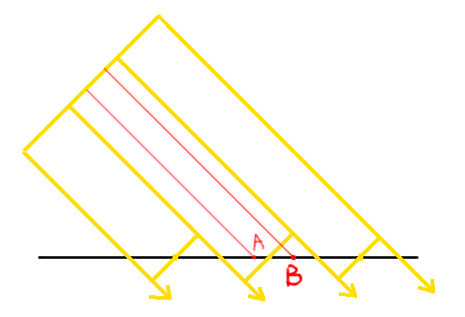
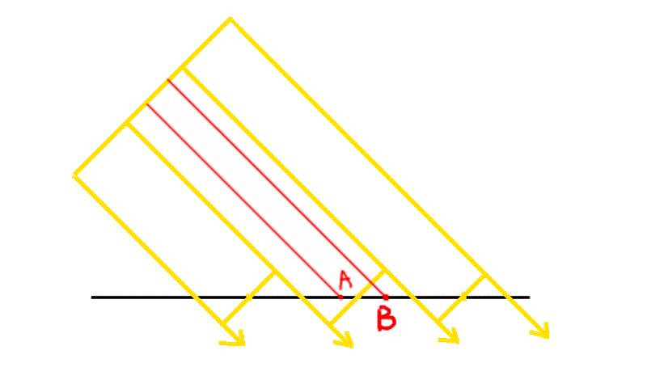
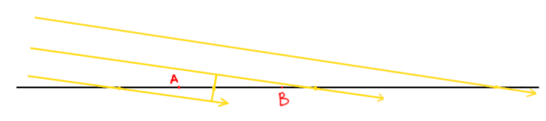
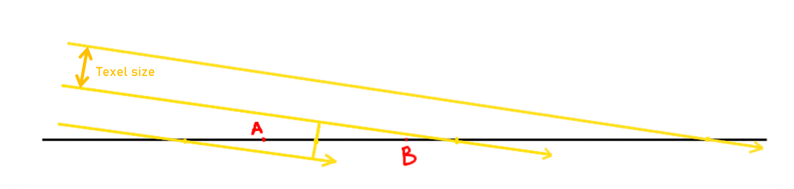

Shadow Mapping
Có ánh sáng thì phải có bóng, blog này mình sẽ chỉ các bạn cách implement bóng bằng kỹ thuật shadow mapping 😳Ở ngoài đời, ánh sáng chiếu vào một vật thì vật đó sẽ chặn đi một phần những tia sáng ấy và tạo ra bóng trên mặt đất. Thì ở trong game cũng tương tự như vậy, nếu bạn có kinh nghiệm làm game thì có thể bạn đang nghĩ là ta sẽ dùng kỹ thuật Raycasting hay gì đó tương tự vì nó cũng thuộc dạng "chiếu tia". Nhưng không, shadow mapping nó phức tạp hơn thế 🥵 Ý tưởng chung chung của shadow mapping là bạn chạy một render pipeline khác dưới góc nhìn của nguồn sáng, tạo ra depth buffer của riêng nó (gọi là shadow map), sau đó ở bước
Rasterizer của luồng chính thì ta truyền từng pixelWorldPos một vào trong render pipeline
của nguồn sáng đó để xem nó có nằm trong bóng không (dựa vào shadow map).Trước tiên mình sẽ làm shadow mapping cho Directional Light trước, ta biết là Directional Light chỉ gồm những tia sáng song song, cho nên trong render pipeline của nó, ở bước projection matrix, nó sẽ là một Orthographic projection matrix. Orthographic đơn giản hơn Perspective, ta không cần lo tới FOV, không cần lo tới perspective divide, thứ duy nhất ta lưu ý là chỉnh lại theo aspect ratio của màn hình.
Có lẽ khi đã tới đây rồi thì não bạn đã quen mọi thứ phải là perspective và z có nhiều ý nghĩa, nhưng orthographic chả liên quan gì mấy thứ kia, một điểm khi đã trải qua view matrix, thì nếu tọa độ view space của nó là x=9, y=10, thì tọa độ của nó trên clip space cũng là x=9, y=10 😳 Ta chỉ cần lo tới việc là clip space bự bao nhiêu (x, y bằng bao nhiêu thì ra khỏi màn hình), rồi sau đó cứ lấy clip space đó nhân cho kích thước canvas là okela. Ở trường hợp đơn giản nhất, ta muốn clip space là hình vuông có cạnh là
size, ta chỉ cần lấy \(x_{clip} = \frac{x*2}{size}, y_{clip} = \frac{y*2}{size}\)
(nhớ là x, y nằm trong khoảng [-1; 1]).Còn z thì nằm trong khoảng [0; 1], cái này ta dựng từ đầu luôn. Một hàng của matrix chỉ làm được nhân rồi cộng, cho nên \(z_{clip}\) chỉ có thể có dạng \(z_{clip} = a + bz\) (\(b\) nằm ở cột z, còn \(a\) nằm ở cột cuối, nhân với thành phần \(w = 1\) của điểm). Ta muốn \(z_{near}\) thành 0 và \(z_{far}\) thành 1, vậy là có 2 phương trình: \[ a + bz_{near} = 0, \quad a + bz_{far} = 1 \] Lấy phương trình sau trừ phương trình trước thì \(a\) mất đi, còn lại \(b(z_{far} - z_{near}) = 1\), tức là \(b = \frac{1}{z_{far}-z_{near}}\), thế ngược lại vào phương trình đầu là ra \(a = -\frac{z_{near}}{z_{far}-z_{near}}\). Gom lại thì \(z_{clip} = \frac{z - z_{near}}{z_{far}-z_{near}}\), ý nghĩa công thức thì chỉ đơn giản là lùi frustum về 0 rồi chia cho độ dài khoảng \([z_{near}; z_{far}]\).
Như vậy, Orthographic projection matrix sẽ là: \[ \begin{bmatrix} \frac{2}{size} & 0 & 0 & 0 \\ 0 & \frac{2}{size} & 0 & 0 \\ 0 & 0 & \frac{1}{z_{far}-z_{near}} & -\frac{z_{near}}{z_{far}-z_{near}} \\ 0 & 0 & 0 & 1 \end{bmatrix} \] Mình nói "trường hợp đơn giản nhất" là vì thực ra ta có thể chỉnh clip space thành hình chữ nhật thay vì hình vuông, và nó có thể không nằm giữa màn hình, lúc đó ta sử dụng các giá trị
left, right, top, bottom thay vì chỉ là size để dựng matrix, nhưng mà như
vậy là đủ rồi.Ta thêm hàm
Orthographic vào trong class Mat4x4:
static Orthographic(size, zNear, zFar) {
let matrix = new Mat4x4();
matrix.m[0][0] = 2.0 / size;
matrix.m[1][1] = 2.0 / size;
matrix.m[2][2] = 1.0 / (zFar - zNear);
matrix.m[2][3] = -zNear / (zFar - zNear);
matrix.m[3][3] = 1.0;
return matrix;
}class DirectionalLight {
constructor(dir, intensity) {
this.dir = dir.normalize();
this.intensity = intensity;
}
}dir. Ngoài ra ta cần thêm một bước nữa
là tìm được up và right của camera, để tìm được thì ta không cần phải tạo một Quaternion đại diện cho độ xoay nguồn sáng chi cho phức tạp 🥵 (thật
ra theo tiêu chuẩn thì đúng là ta nên làm như vậy). Ta có thể sử dụng tích có hướng để tìm ra được luôn up và right, bằng cách là giả định một up tạm trước,
thường là up của thế giới (Vector3.up), nếu như forward (dir) gần Vector3.up quá thì xài Vector3.forward, sau đó ta tính right bằng tích có hướng giữa
dir và up tạm, sau đó tìm lại up thật bằng tích có hướng giữa dir và right 😳
class DirectionalLight {
constructor(dir, intensity) {
this.dir = dir.normalize();
this.intensity = intensity;
let up = Math.abs(Vector3.dot(this.dir, Vector3.up)) < 0.99 ? Vector3.up : Vector3.forward; // nếu dir gần up của thế giới quá thì up là forward của thế giới, còn không thì cứ xài up thế giới tạm
let right = Vector3.cross(up, this.dir).normalize(); // tính right bằng tích có hướng giữa forward và up tạm
up = Vector3.cross(this.dir, right).normalize(); // tính lại up thật sự bằng tích hướng của forward và right
let lightPos = Vector3.mul(this.dir, -shadowMapDistance); // vị trí nguồn sáng giả định, shadowMapDistance mình để bên ngoài để thống nhất cho cả engine
this.viewMatrix = Mat4x4.View(right, up, this.dir, lightPos); // dựng view matrix như thường
this.projectionMatrix = Mat4x4.Orthographic(shadowMapDistance, 0.1, shadowMapDistance); // dựng orthographic projection matrix, dùng shadowMapDistance cho size và far plane luôn
}
}shadowMapSize để xác định kích thước "canvas"
của shadowMap, cũng để bên ngoài để thống nhất toàn engine:
class DirectionalLight {
constructor(dir, intensity) {
this.dir = dir.normalize();
this.intensity = intensity;
this.shadowMap = [];
for (let i = 0; i < shadowMapSize; i++) {
let row = [];
for (let j = 0; j < shadowMapSize; j++) {
row.push(Infinity);
}
this.shadowMap.push(row);
}
let up = Math.abs(Vector3.dot(this.dir, Vector3.up)) < 0.99 ? Vector3.up : Vector3.forward;
let right = Vector3.cross(up, this.dir).normalize();
up = Vector3.cross(this.dir, right).normalize();
let lightPos = Vector3.mul(this.dir, -shadowMapDistance);
this.viewMatrix = Mat4x4.View(right, up, this.dir, lightPos);
this.projectionMatrix = Mat4x4.Orthographic(shadowMapDistance, 0.1, shadowMapDistance);
}
}buildShadowMap(tris) {
// init shadow map như depth buffer
for (let i = 0; i < shadowMapSize; i++) {
for (let j = 0; j < shadowMapSize; j++) {
this.shadowMap[i][j] = Infinity;
}
}
for (let tri of tris) {
let shadowTri = tri.clone(); // clone ra để an toàn, không ảnh hưởng luồng chính
if (Vector3.dot(tri.getWorldNormal(), this.dir) >= 0) continue; // backface culling
// render pipeline
shadowTri.mulMat4x4(this.viewMatrix);
shadowTri.mulMat4x4(this.projectionMatrix);
shadowTri.perspectiveDivide();
// nhân lên kích thước "canvas"
for (let i = 0; i < shadowTri.vertices.length; i++) {
shadowTri.vertices[i].x = (shadowTri.vertices[i].x + 1) * shadowMapSize / 2;
shadowTri.vertices[i].y = (-shadowTri.vertices[i].y + 1) * shadowMapSize / 2;
}
// rasterize để fill depth buffer, y hệt rasterizer chính (bao gồm cả kỹ thuật incremental edge function ở blog 8)
const bbox = shadowTri.boundingBox(shadowMapSize, shadowMapSize);
shadowTri.calculateSignedDoubleArea();
let edgeFunctionRow01 = edgeFunction(
shadowTri.vertices[0],
shadowTri.vertices[1],
new Vector3(bbox[0], bbox[2], 0));
let edgeFunctionRow12 = edgeFunction(
shadowTri.vertices[1],
shadowTri.vertices[2],
new Vector3(bbox[0], bbox[2], 0));
let edgeFunctionRow20 = edgeFunction(
shadowTri.vertices[2],
shadowTri.vertices[0],
new Vector3(bbox[0], bbox[2], 0));
for (let y = bbox[2]; y <= bbox[3]; y++) {
let edgeFunction01 = edgeFunctionRow01;
let edgeFunction12 = edgeFunctionRow12;
let edgeFunction20 = edgeFunctionRow20;
for (let x = bbox[0]; x <= bbox[1]; x++) {
if (edgeFunction01 > 0 && edgeFunction12 > 0 && edgeFunction20 > 0) {
const baryCoord0 = edgeFunction12 / shadowTri.signedDoubleArea;
const baryCoord1 = edgeFunction20 / shadowTri.signedDoubleArea;
const baryCoord2 = edgeFunction01 / shadowTri.signedDoubleArea;
const z = shadowTri.vertices[0].z * baryCoord0 + shadowTri.vertices[1].z * baryCoord1 + shadowTri.vertices[2].z * baryCoord2;
if (z < this.shadowMap[y][x]) {
this.shadowMap[y][x] = z;
}
}
edgeFunction01 += (shadowTri.vertices[1].y - shadowTri.vertices[0].y);
edgeFunction12 += (shadowTri.vertices[2].y - shadowTri.vertices[1].y);
edgeFunction20 += (shadowTri.vertices[0].y - shadowTri.vertices[2].y);
}
edgeFunctionRow01 -= (shadowTri.vertices[1].x - shadowTri.vertices[0].x);
edgeFunctionRow12 -= (shadowTri.vertices[2].x - shadowTri.vertices[1].x);
edgeFunctionRow20 -= (shadowTri.vertices[0].x - shadowTri.vertices[2].x);
}
}
}boundingBox của ta lấy mặc định là kích thước canvas chính, nên ta sửa lại để lấy theo kích thước truyền vào:
boundingBox(maxWidth = canvas.width, maxHeight = canvas.height) {
let minX = Math.min(this.vertices[0].x, this.vertices[1].x, this.vertices[2].x);
let maxX = Math.max(this.vertices[0].x, this.vertices[1].x, this.vertices[2].x);
let minY = Math.min(this.vertices[0].y, this.vertices[1].y, this.vertices[2].y);
let maxY = Math.max(this.vertices[0].y, this.vertices[1].y, this.vertices[2].y);
minX = Math.max(0, Math.trunc(minX));
maxX = Math.min(maxWidth - 1, Math.trunc(maxX));
minY = Math.max(0, Math.trunc(minY));
maxY = Math.min(maxHeight - 1, Math.trunc(maxY));
return [minX, maxX, minY, maxY];
}isInShadow(pixelWorldPos, triWorldNormal) {
// đoạn code y hệt buildShadowMap
let lightSpacePos = pixelWorldPos.clone();
if (Vector3.dot(triWorldNormal, this.dir) >= 0) return false;
lightSpacePos.mulMat4x4(this.viewMatrix);
lightSpacePos.mulMat4x4(this.projectionMatrix);
lightSpacePos = Vector3.div(lightSpacePos, lightSpacePos.w);
const x = Math.floor((lightSpacePos.x + 1) * shadowMapSize / 2);
const y = Math.floor((-lightSpacePos.y + 1) * shadowMapSize / 2);
// tới đây thì chỉ cần so sánh độ sâu với shadowMap
return lightSpacePos.z > this.shadowMap[y][x];
}shadowMapSize và shadowMapDistance mà ta nói là "để bên ngoài cho thống nhất", và tạo 1 object DirectionalLight
để thay thế cho lightDir và dirLightIntensity cũ. Shadow map size ta cho đại một kích thước chuẩn chuẩn như 512, distance cũng cho tạm 20 (mình sẽ nói cách
biết được bao nhiêu là chuẩn sau).
let shadowMapSize = 512;
let shadowMapDistance = 20;
let dirLight = new DirectionalLight(new Vector3(-1, -1, -1), parseFloat(lightDirIntensitySlider.value));lightDir và dirLightIntensity cũ thành object dirLight mới:
processTriangles(tris) {
...
let dirLightDiffuse = (1 - (Vector3.dot(triWorldNormal, dirLight.dir) + 1) / 2) * dirLight.intensity;
...
}lightDirIntensitySlider.addEventListener("input", () => {
dirLight.intensity = parseFloat(lightDirIntensitySlider.value);
lightDirIntensityText.textContent = dirLight.intensity.toFixed(2);
});buildShadowMap ta gọi ở ngay trước view matrix (mình nhắc lại điều này chắc cũng nhiều lần r 😅):
let objectTris = [];
objectTris.push(...cube1.getTransformedTriangles());
objectTris.push(...cube2.getTransformedTriangles());
for (let light of pointLights) {
objectTris.push(...light.getTransformedTriangles());
}
dirLight.buildShadowMap(objectTris);isInShadow thì ta để trong hàm processTriangles của Rasterizer, cụ thể là ngay sau khi tính xong được pixelWorldPos. Khi một pixel ở trong shadow
thì ta nhân nó với một shadowFactor nào đó nhỏ hơn 1 để giảm độ sáng xuống (tùy bạn chỉnh). Lưu ý là chỉ nhân phần sáng của Directional Light thôi,
shadow map này là của Directional Light, pixel nằm trong bóng nghĩa là Directional Light không chiếu tới được nó, chứ point light thì vẫn chiếu tới bình thường.
Nếu nhân luôn cả point light thì khi bạn kéo cường độ Directional Light về 0, bóng vẫn còn đó, vì nó đang làm tối ánh sáng của point light:
if (z < this.depthBuffer[y][x]) {
...
pixelWorldPos = Vector3.div(pixelWorldPos, pixelInvZ);
let inShadow = dirLight.isInShadow(pixelWorldPos, triWorldNormal);
let shadowFactor = inShadow ? 0.2 : 1.0;
...
let lightIntensity = dirLightDiffuse * shadowFactor + pointLightDiffuse;
...
}cube1 mà hướng về phía ánh sáng,
bạn sẽ thấy nhiều điểm shadow nhỏ nhỏ, giống như nó đang cast shadow lên chính nó.Đối với vấn đề 1 thì ta có thể chỉnh shadow map distance hoặc shadow map size cho tới khi nó ra chuẩn, nhưng mà thay vì chỉnh 1 cách mù quáng thì thật ra ta có thể vẽ ra luôn shadow map của chúng ta ra một canvas khác để dễ debug luôn 😳
Ta tạo một canvas khác:
<h2>Shadow Map Debug</h2>
<canvas id="shadowCanvas" width="512" height="512" style="border: 2px solid #aaa; background: #111"></canvas>let shadowCtx = document.getElementById("shadowCanvas").getContext("2d");
function drawShadowMapDebug() {
const imageData = shadowCtx.createImageData(shadowMapSize, shadowMapSize);
for (let y = 0; y < shadowMapSize; y++) {
for (let x = 0; x < shadowMapSize; x++) {
const depth = dirLight.shadowMap[y][x];
const idx = (y * shadowMapSize + x) * 4;
const intensity = depth === Infinity ? 255 : (1 - depth) * 255; // tính màu của pixel bằng ngược lại của depth (càng gần càng sáng, càng sâu càng tối)
imageData.data[idx] = intensity;
imageData.data[idx + 1] = intensity;
imageData.data[idx + 2] = intensity;
imageData.data[idx + 3] = 255;
}
}
shadowCtx.putImageData(imageData, 0, 0);
}z = 5.
Nhưng mà thay vì đơn giản là chỉnh "chỗ mà nguồn sáng chiếu vào" là (0, 0, 5), thì nó phải đi theo camera để cho shadow luôn hiện chuẩn cho mọi nơi.
Cụ thể chỗ đó là phải chính giữa frustum tầm nhìn của camera, tuy nhiên ta biết là far plane nó hơi xa nên suy ra chính giữa frustum cũng sẽ hơi xa,
cho nên ta tự thêm một biến zfar mới để lấy frustum nhỏ hơn để dùng nó cho riêng việc shadow mapping.Shadow Acne
Về vấn đề thứ hai (vấn đề các điểm shadow nhỏ nhỏ), bạn hãy tưởng tượng từ góc nhìn nguồn sáng, có 1 lưới ống hình vuông bắn xuống mặt đất, mỗi ống hình vuông đó bắt đầu từ một pixel trong shadow map (những ống này song song nhau vì là Orthographic projection). Mỗi ống sẽ có 1 vùng ảnh hưởng của riêng nó trên mặt đất, nếu ánh sáng bắn thẳng băng từ trên xuống thì các vùng ảnh hưởng đó sẽ là hình vuông, còn nếu bắn từ 1 góc nghiêng, các vùng ảnh hưởng đó sẽ là hình chữ nhật, hình bình hành, hình thoi, tùy vào góc của ánh sáng. Nhưng vùng ảnh hưởng hình gì không quan trọng, quan trọng là bạn phải hiểu là các điểm trong 1 vùng ảnh hưởng vẫn sẽ có depth khác nhau, nhưng đối với shadow map thì mọi điểm trong 1 vùng ảnh hưởng đều có chung 1 depth. Mình vẽ ra một hình minh họa cho bạn dễ hình dung:
Cách sửa hiển nhiên nhất là tăng kích thước shadow map lên để nó càng ngày càng chuẩn xác, tuy nhiên như ta biết thì CPU ta sẽ không chịu nổi 😅 Có một cách sửa đơn giản hơn nhiều mà ai cũng xài, đó là khi so sánh 2 depth bạn chỉ cần cộng thêm một số nhỏ cho depth của shadow map, để chắc chắn rằng là depth chính phải hơn depth shadow map và hơn một khoảng nhỏ nữa mới được tính là nằm ở trong bóng, số nhỏ này được gọi là Shadow Bias:

Ta bắt tay vào sửa thôi 😳 Đầu tiên là ở class
Camera ta thêm một hàm tính tọa độ chính giữa của frustum, và nhận vào một zfar tùy chỉnh nếu có:
class Camera {
...
getFrustumCenter(customZFar = -1) {
let forward = this.rotation.rotateVector(Vector3.forward);
let near = Vector3.add(this.pos, Vector3.mul(forward, znear));
if (customZFar == -1)
customZFar = zfar;
let far = Vector3.add(this.pos, Vector3.mul(forward, customZFar));
return Vector3.div(Vector3.add(near, far), 2);
}
...
}DirectionalLight, ta bốc phần tính up right, view matrix các thứ ra một hàm riêng để gọi mỗi frame, vì lúc này nó sẽ
update theo camera. Đồng thời ta cộng thêm shadow bias ở khúc so sánh depth như trên mình nói:
class DirectionalLight {
constructor(dir, intensity) {
this.dir = dir.normalize();
this.intensity = intensity;
this.shadowMap = [];
for (let i = 0; i < shadowMapSize; i++) {
let row = [];
for (let j = 0; j < shadowMapSize; j++) {
row.push(Infinity);
}
this.shadowMap.push(row);
}
}
buildViewAndProjectionMatrix() {
let up = Math.abs(Vector3.dot(this.dir, Vector3.up)) < 0.99 ? Vector3.up : Vector3.forward;
let right = Vector3.cross(up, this.dir).normalize();
up = Vector3.cross(this.dir, right).normalize();
let frustumCenter = camera.getFrustumCenter(shadowMapDistance); // tính chính giữa frustum, với zfar là shadowMapDistance luôn (biến này khá hữu dụng 😅)
let lightPos = Vector3.sub(frustumCenter, Vector3.mul(this.dir, shadowMapDistance)); // tính tọa độ nguồn sáng giả định từ frustumCenter thay vì gốc tọa độ
this.viewMatrix = Mat4x4.View(right, up, this.dir, lightPos);
this.projectionMatrix = Mat4x4.Orthographic(shadowMapDistance, 0.1, shadowMapDistance);
}
...
isInShadow(pixelWorldPos, triWorldNormal) {
...
return lightSpacePos.z > this.shadowMap[y][x] + shadowBias; // shadowBias cũng để bên ngoài để sửa thống nhất
}
}let shadowBias = 0.04;
let shadowMapDistance = 5;buildViewAndProjectionMatrix trước khi buildShadowMap:
dirLight.buildViewAndProjectionMatrix();
dirLight.buildShadowMap(objectTris);zfar - kích thước frustum để hiện rõ khi gần
và hiện blocky khi xa. Tuy nhiên mình nghĩ nhiêu đây là đủ rồi 🥵Và một cái nữa, Shadow Acne thật ra chưa hết hẳn, bạn sẽ thấy từng mặt chớp 1 cái trước khi nó quay qua bên có bóng. Cái này xảy ra cho những frame mà ánh sáng gần như song song với tam giác, shadow bias không thể cover hết:

Một cái mà người ta thường làm là: dịch điểm mà ta đang xét lên dọc theo pháp tuyến của tam giác, mình gọi khoảng cách dịch là offset. Offset này sẽ tăng theo "độ song song" của tam giác với ánh sáng (xài tích vô hướng), để đảm bảo những tam giác hướng về phía ánh sáng không bị ảnh hưởng gì mấy, còn những tam giác song song với ánh sáng sẽ được offset nhiều nhất.
Đối với trường hợp extreme nhất là ánh sáng tiệm cận song song tam giác, người ta sẽ cho offset bằng texel size của shadow map luôn, và sẽ giảm dần theo tích vô hướng như mình nói ở trên. Tại sao lại là texel size thì mình sẽ bên dưới, giờ mình sẽ giải thích kỹ texel size trước. Texel size chính là cái mà mình đã giải thích ở cuối blog texture, tuy nhiên với trường hợp hiện tại sẽ có 1 điểm khác. Blog trước mình nói là "texel size sẽ được tính bằng kích thước của game object mà nó được sample vào chia cho kích thước của texture", nhưng ở đây làm gì có game object hay texture nào. Thật ra texture của chúng ta chính là shadow map, và game object ở đây chính là grid "ống" mà mình nói ở trên, nghĩa là texel size trong trường hợp này chính là kích thước của 1 "ống". Kích thước texture shadow map là
shadowMapSize, và kích thước toàn grid ống (số lượng ống) là size của Orthographic projection matrix,
là bằng shadowMapDistance. Như vậy texel size - kích thước 1 "ống" - sẽ bằng shadowMapDistance / shadowMapSize.Sidetrack qua texel size đủ rồi, bây giờ quay lại vấn đề chính: Tại sao offset lại phải tính theo texel size? Bạn xem gif sau:

Ta chỉ cần sửa lại hàm
isInShadow như sau:
isInShadow(pixelWorldPos, triWorldNormal) {
let dotProduct = Vector3.dot(triWorldNormal, this.dir);
if (dotProduct >= 0) return false;
let texelSize = shadowMapDistance / shadowMapSize;
let normalOffset = texelSize * (1 - Math.abs(dotProduct)); // 1 texel size là đủ, tăng dần khi pháp tuyến tam giác càng vuông góc với ánh sáng
let lightSpacePos = Vector3.add(pixelWorldPos, Vector3.mul(triWorldNormal, normalOffset)); // offset pixelWorldPos theo hướng pháp tuyến
lightSpacePos.mulMat4x4(this.viewMatrix);
lightSpacePos.mulMat4x4(this.projectionMatrix);
lightSpacePos = Vector3.div(lightSpacePos, lightSpacePos.w);
const x = Math.floor((lightSpacePos.x + 1) * shadowMapSize / 2);
const y = Math.floor((-lightSpacePos.y + 1) * shadowMapSize / 2);
return lightSpacePos.z > this.shadowMap[y][x] + shadowBias;
}Tiếp theo bạn expect mình sẽ nói tiếp về shadow mapping cho point light, nhưng mà bạn thấy rằng mới shadow cho Directional Light thôi thì nó đã lag như vậy rồi. Làm shadow mapping cho point light thật ra còn lag hơn vậy 6 lần 😳 Đó là vì point light bắn tia sáng ra mọi hướng, 1 shadow map không thể nào mô phỏng hết mọi góc nhìn được, cho nên ta cần 6 shadow map chiếu ra 6 hướng, và mỗi shadow map đều xài Perspective projection matrix thay vì Orthographic (point light thì tia sáng tỏa ra thay vì song song), cái này được gọi là cube shadow map. Làm graphics engine chạy bằng CPU thì 1 lúc nào đó nó sẽ dính giới hạn của CPU, mô phỏng point light một cách mượt mà chỉ làm được trên GPU, hoặc có thể làm được trên CPU nếu bạn cheat theo một cách nào đó. Mình nói ý tưởng cho bạn rồi, bạn có thể chơi với nó, nhưng mình sẽ gác shadow tại đây 🥵